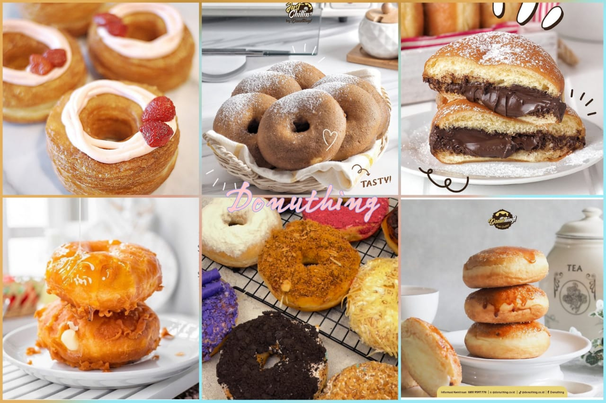
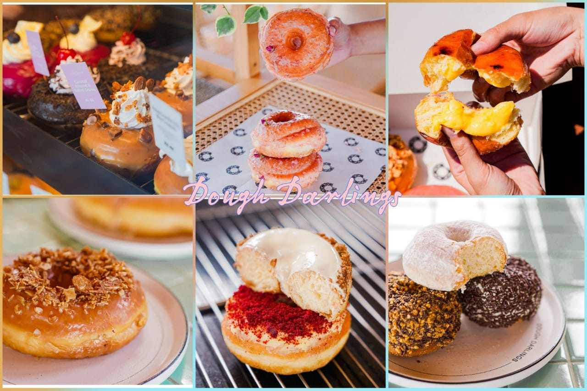
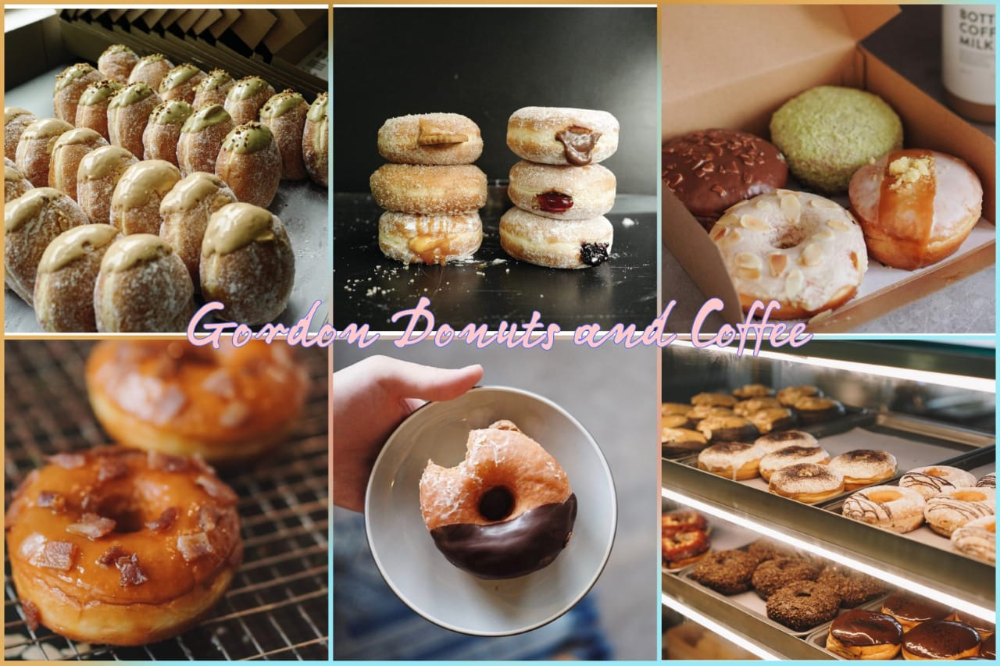
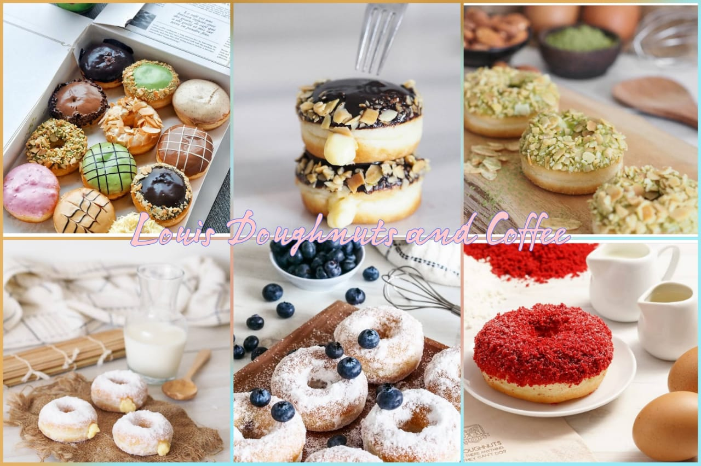

Halo gengs~ apa kabar hari ini? Gimana nih suasana hati kamu? Goodmod or badmood? Tenang kalau kamu lagi, aku bisa saranin cemilan yang bisa bikin kamu happy.
Do to the nat, donat. Siapa sih yang gak tahu donat cemilan berbahan dasar tepung ini yang identik dengan rasa manis dan menggunggah lidah. Yups, donat dengan rasanya yang manis bisa bikin mood kamu jadi happy lho gengs~. Seiring perkembangan zaman, donat tidak hanya berasa manis atau dengan taburan gula halus di atasnya, namun jugaa varian lainnya. Sering dijumpai dengan varian rasa buah yang beragam, bahkan ada juga varian sayur bagi yang vegetarian.
Nah aku punya rekomendasi toko donat populer di Jakarta yang bisa kamu kunjungi nih gengs~.
1. Donuthing
Salah satu donat yang viral di 2021 adalah Donuthing. Donat milik selebritis, Baim Wong memiliki rasa yang amat menggiurkan, manis tapi tidak bikin enek. Teksturnya lembut, fluffy, ukuran yang sangat pas mengenyangkan, dan topping serta filling yang berlimpah.
Varian favorit atau best seller adalah Creame Brulee. Filling donatnya juga gak kalah menarik ada Cheese Crispy Donuth, Rabbit Candi Crispy Donuth, dan banyak lainnya. Ada juga menu donat yang gurih, seperti Beef Abon dan Salted Egg. Harga donat mulai Rp 7.000/pcs.
2. Dough Darlings
Dough Darlings terkenal populer dengan donatnya yang padat, lembut, besar, serta varian rasa beragam yang unik. Tidak hanya menyajikan dengan donat yang memiliki topping dan filling, Dough Darlings turut menyajikan donat yang berisikan sesuatu seperti burger.
Varian best seller berasa manis yang wajib dicoba ada Triple Belgian Chocolate, White Chocolate Speculoos, dan banyak lagi. Kalau kamu suka gurih, bisa pilih varian seperti Salted Egg, Mushroom Burger Donut, Chicken Burger Breakfast Donut, dan masih banyak lainnya. Harga satuan donat di Dough Darlings bisa dibilang lebih tinggi dibanding yang lain karena faktor tekstur sekaligus rasa yang amat menggoyang lidah, yakni Rp 20.000/pcs.
3. Gordon Donuts and Coffee
Donat populer yang mengusung gaya Amerika, namun tetap dengan bahan - bahan khas Indonesia, yap, Gordon Donuts and Coffee. Gordon memiliki varian best seller Espro dengan kombinasi isian krim, espresso, serta topping cokelat yang nikmat. Ada juga nih Creme Brulee, Red Velvet, Coffee Almond, Cheese Cinnamon, Matcha Azuki Cream, dan varian lainnya yang wajib kamu coba gengs~
Psst ada varian best seller khas Indonesia, kue klepon. Donat ini berisikan gula merah dengan taburan parutan kelapa di atasnya. Donat di Gordon Donuts and Coffee dibrandrol mulai Rp 15.000/pcs.
4. Krispy Kreme

Siapa sih yang tidak kenal Krispy Kreme? Donat andalan sejuta amat nih katanyaa. Varian Krispy Kreme yang populer adalah Original Glazed. Rasanya yang manis, kenyal namun tidak giung sehingga cocok bagi yang suka maupun kurang suka manis.
Krispy Kreme juga punya varian lain Classic Cinnamon, Oreo, Tiramisu, Apple Pie, Cafe Late, Cheese Cake, dan banyak lagi. Di hari-hari tertentu, Krispy Kreme juga kerap mengeluarkan donat special edition yang berbentuk lucu dan menarik. Harga mulai Rp 10.000/pcs.
5. Louis Doughnut and Coffee
Louis Doughnuts & Coffee merupakan salah satu gerai donat yang banyak digemari, apalagi gerai yang di Karawaci nih. Donat Louis memiliki tekstur yang fluffy, lembut, dan varian yang beragam.
Dengan varian yang beragam, kamu bisa banget coba semua variannya. Tenang gengs,kamu gak akan cepat kekenyangan karena ukuran donatnya pas dan nggak terlalu besar. Harganya sangat terjangkau kisaran Rp 8.000/pcs.
Okkay gengs~ itu tadi rekomendasi toko donat populer dan enak di Jakarta dari aku. Cuss deh kalian langsung eksekusi ke tempatnya dan cobain beragam varian yang sangaaat lezat. Jangan lupa sambil ngopi - ngopi hihi ajak orang tua, saudara, besti, atau pasangan kamu yaa. Mungkin dari kalian ada yang punya rekomendasi lain, bisaa comment ya nanti aku review.